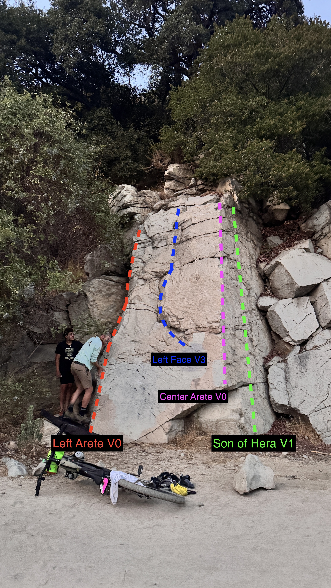
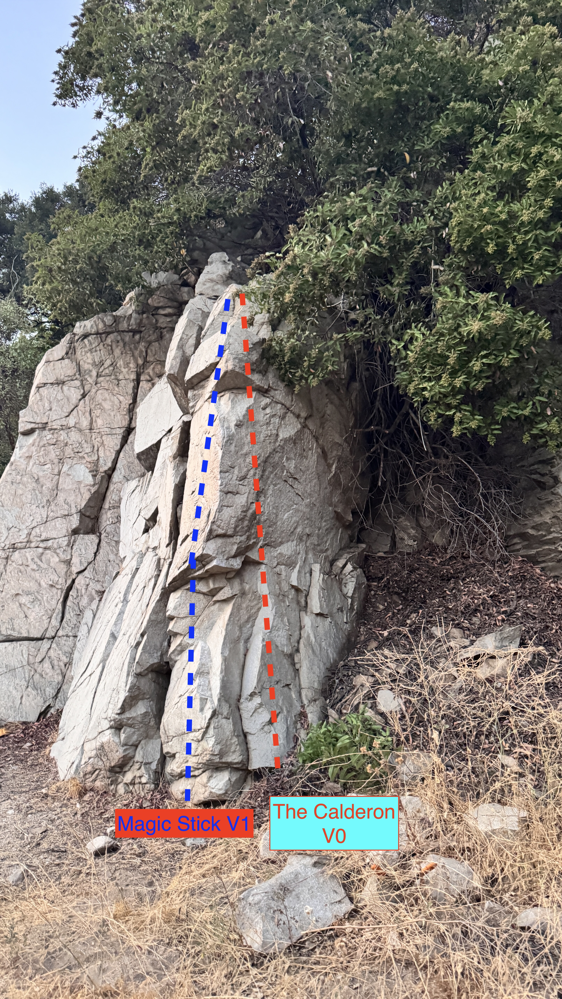

Arroyo Seco Boulders
10/10 classic low altitude Angeles bouldering right here. Haters are always gonna hate, but this rock is *genuinely* on the same level as the Buttermilks. Yeah we said it!
The Arroyo Seco is a long canyon and waterway that stretches from Red Box all the way down to the LA River in Elysian Park. Most of the rock climbing occurs north of Devils Gate Dam, where the boulders are plentiful and the rock is generally good quality granite. You must understand that climbing here is ridiculously underrated by the general public so solitude is guaranteed other than the occasional hiker.
Wall Boulder
Sitting to the right of a massive Elderberry tree, this boulder has some fun warm ups and some challenge to it while being easy to reach from the nearest parking lot. Reaching it requires hiking or biking up the Gabrielino Trail from the gate and just passing the forest service buildings. The boulder sits left of the "Boulder of the Gab" and is not easy to miss. Graffiti on the face of the boulder provides extra challenge when attempting problems on it.

Left Arete V0
FA: unknown
Start low on okay feet and good hands and move up the arete to the top.
Left Face V3
FA: unknown
Begin on the holds below the block, kinda close to the start of the right arete, and move up. Footing sucks due to the graffiti but make do.
Center Arete V0
FA: unknown
Start on good hands and move up to the juggy horn and mantle over the top.
Son of Hera V1
FA: unknown
Start to the right of "Center Arete" on crimps while climbing to the top and avoiding the arete and right crack entirely.
Boulder of the Gab
Located to the right of the Wall Boulder, this boulder is a bit shorter but has some untouched potential due to a dead tree blocking the majority of it. With a bit of cleaning, the boulder has revealed some cool problems, most of which are still unclimbed. Due to that nature, use caution with loose rock and dirt at the top.

Magic Stick V1
FA: Matthew Jackson 7/25/2025
Climb the face and arete to the top on good holds and crimps. Bump Magic Stick by Lil Kim super loud at 9pm for good luck.
Chess V0
FA: Matthew Jackson 8/11/2025
Sit start on obvious holds and follow up the face to a mantle. Some holds on the right might break on you since this area is still super new.